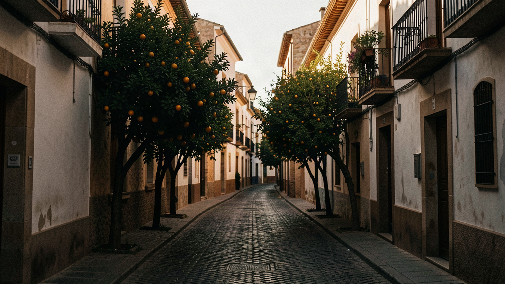
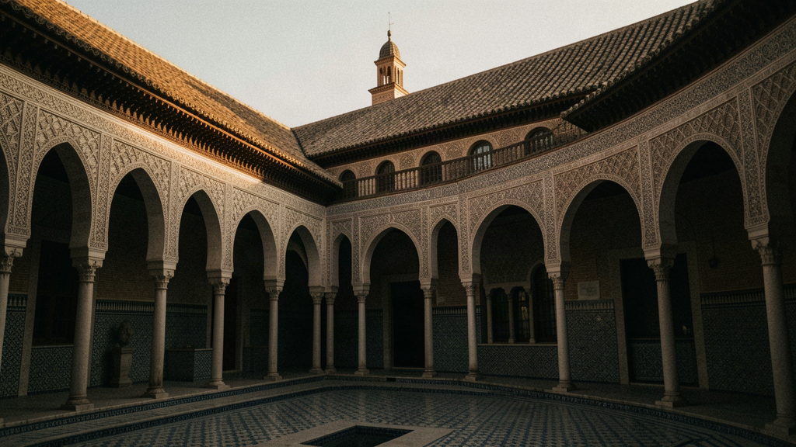
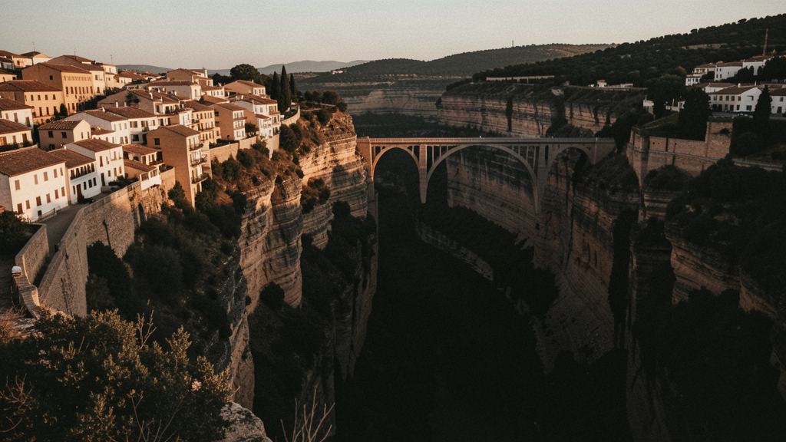
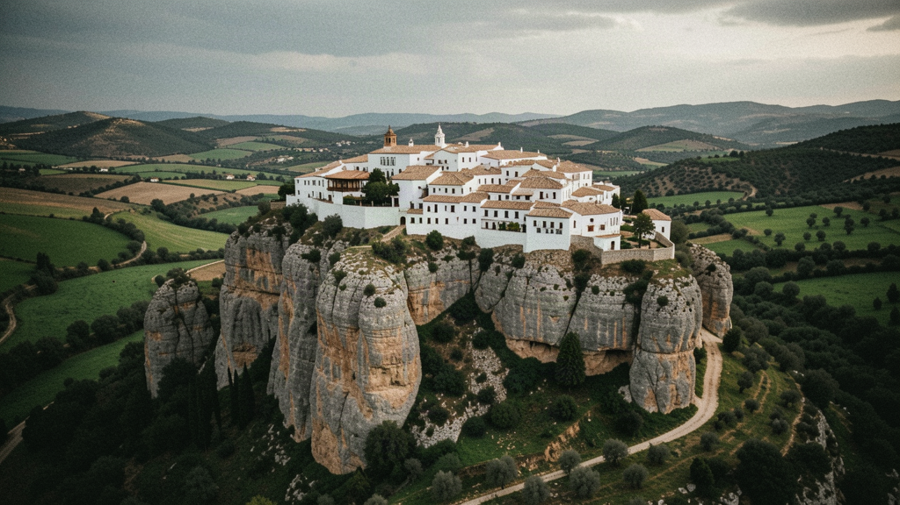
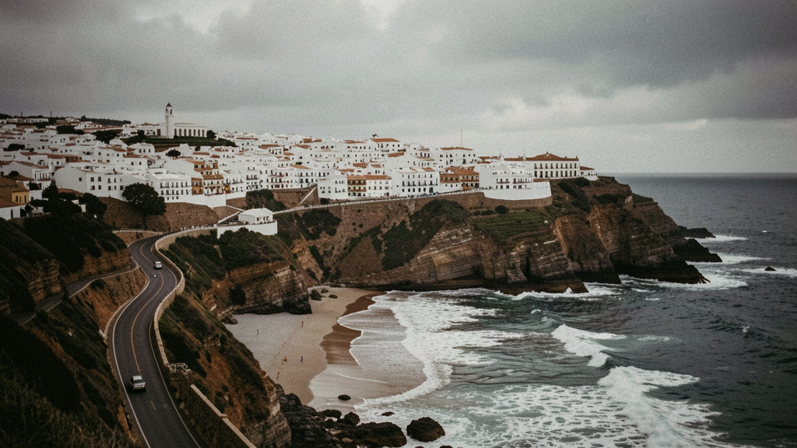
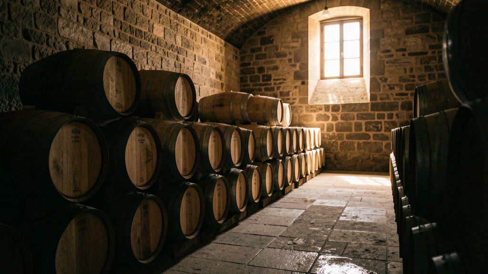
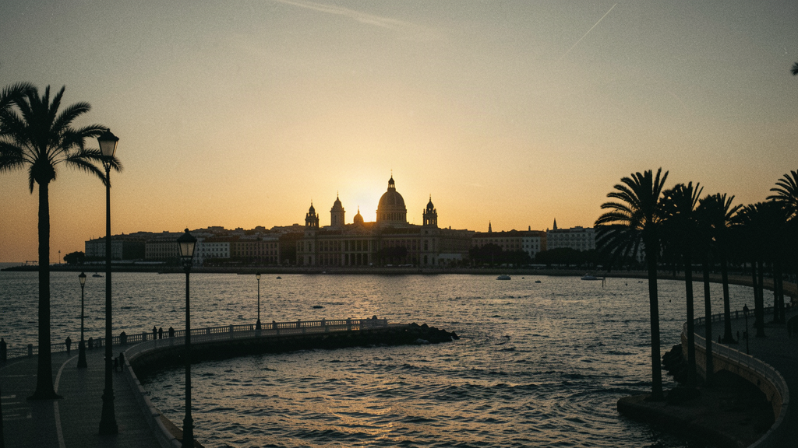

Spain · Spring
Seven nights, your own room, a table of six. Sherry, tiled patios, white villages, and hills that fall to the sea.
You show up solo. You don't travel alone. This is a spring itinerary (April–May) across western Andalusia, built for people in their late 30s to 50s who'd rather not eat every dinner alone and don't want a microphone and a flag. We can't promise you'll be best friends with the five people on your table. We won't pretend to. What we've done is stack the group in your favour and put a real local on the ground who knows the shortcut to the patio and the bodega owner by name.
Your own room. Every night, your own key. Single occupancy is the default, not an upgrade you pay extra for. Company at the table, quiet in your room.
The price. £2,150 per person, own room included. This is a band, not a fixed quote — we haven't signed every supplier yet, so the first departures are expected in 2026 or 2027, and you're not putting money on a date that doesn't exist.
Six of you, matched for range rather than likeness — a mix of pace, energy, and humour, reviewed by a person before it locks.
Your local host on the ground is Lucía Ferrer, a Sevillana who's been running slow trips through her own region for eleven years. She's the one who'll tell you which venta on the road to Ronda is worth the stop and which is a tourist treadmill.

Fly into Seville (SVQ). A driver meets you; the transfer to the Barrio Santa Cruz is 25 minutes. Check in to your room — a boutique casa palacio on Calle Santa María la Blanca, three minutes from the cathedral, with a tiled interior patio and no twin beds in sight.
Light wander with Lucía through the Santa Cruz quarter: the Plaza de Santa Cruz, the narrow callejones off Calle Mateos Gago, the Murillo Gardens. No lectures. She points out where to come back for tapeo later and leaves you to unpack.
First table dinner at El Rinconcillo (Calle Gerona 40), serving since 1670 — the oldest tapas bar in Seville, tiled and unhurried. Lucía joins for the first half, then leaves you to it. Included: dinner.

Skip-the-line entry to the Real Alcázar. Lucía walks you through the Patio de las Doncellas, the Salón de Embajadores, and the gardens — the Jardines del Alcázar with their reflecting pools and the Baños de María de Padilla below ground. Allow two hours; the group splits by interest after the guided portion.
Free to choose. Most of the table walks the Parque de María Luisa to the Plaza de España, or browses the shops on Calle Sierpes. Two lunches this week are left open — this is one of them. Not included: lunch.
Dinner at Eslava (Calle Eslava 3), a modern barrio favourite a ten-minute walk from the hotel. Included: dinner.

Private minivan departs Seville at 09:30. The drive is ~130 km, about two hours, climbing into the Serranía de Ronda. Coffee stop in Algodonales at a roadside venta Lucía trusts.
Arrive Ronda. Check in to the Parador de Ronda, built into the cliff edge above the Puente Nuevo — your room looks straight down the 120-metre El Tajo gorge. Walk the bridge, then the Plaza de Toros (1784, the oldest in Spain) with its small museum. Late afternoon on the Paseo de los Ingleses for the long view.
Dinner at Tragatá (Callejón del Prado 1), a small kitchen behind the bullring known for local rabo de toro and plato de montaña. Included: dinner.

Drive east ~95 km (1h45) to Arcos de la Frontera, the first of the pueblos blancos. Park below; walk up through the cobbled streets to the Castillo de Arcos and the Mirador de la Peña for the gorge view over the Guadalete.
Long lunch at Restaurante El Convento (Calle Maldonado 2), set in a restored convent — one of the two open lunches, or included at your choice. Afternoon free to wander the Plaza del Cabildo and the ceramic shops.
Check in to the Parador de Arcos de la Frontera, a 15th-century castle-fortress with a restaurant terrace over the white rooftops. Group dinner. Included: dinner.

Drive south ~75 km (1h15) to Vejer de la Frontera, a hilltop white village reached by a steep switchback road. Walk the Plaza de España and the Castillo de Vejer; the town is partly walled and largely pedestrian, so the group moves on foot.
Cooking session with a local cook at a private cortijo outside the village — gazpacho, tortillitas de camarones, and the regional tocinillo del cielo. Then 20 minutes down to the Cabo de Trafalgar coast for a walk above the Atlantic before it cools.
Check in to Hotel Boutique V in the old town. Dinner at La Plazuela (Plaza de España 14), under the bougainvillea. Included: dinner.

Drive ~50 km (50 min) to Jerez de la Frontera. Tour and tasting at Bodegas Lustau (Calle Arcos 56) — a working bodega where you'll walk the solera halls and taste three finos and olorosos from the cask. Helena books a second tasting; nobody stops her.
Continue ~35 km (40 min) to Cádiz, Europe's oldest continuously inhabited city, on a spit of land in the Atlantic. Walk the Catedral de Cádiz and climb the Torre Tavira for the camera obscura view, then the La Caleta beach at the northern tip.
Check in to the Parador de Cádiz, on the waterfront promenade looking across the bay. Farewell-ish dinner at El Faro de Cádiz (Calle San Félix 15), known for tortillitas and fresh urríaz. Included: dinner.

Easy morning on the Plaza de España and the indoor Mercado Central off Plaza de la Libertad, where the table splits — some buy oranges, some sit with coffee. Late checkout at noon.
Transfer back to Seville (~120 km, 1h30), arriving mid-afternoon. Last group lunch at La Azotea (Calle Conde de Ibarra 8) — one of the open lunches, or included at your call — before you head to your airport hotel or the evening flight. Included: lunch.
Departures from Seville (SVQ) or Jerez (XRY). If you're on a late flight, your room is held until checkout and Lucía points you to the last tapeo near the cathedral.
Seven nights, your own room, a real local in the van, and a table of people matched to give the week a fair chance. We can't promise the six of you become lifelong friends — we've told you that. What we can say is the patios are real, the drive times are the ones Google gives, and dinner is rarely quiet.
When a table opens for Spain in Spring, we'll tell you. One message when there's something real — no newsletter, no hard sell.
Register your interest